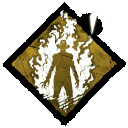
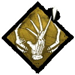
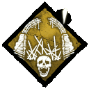

| La pesadilla | |
|---|---|
| Nombre | Frederick "Freddy" Charles Krueger |
| Apodo | El hombre de arena |
| Genero | Masculino |
| Poder | Demonio de los sueños |
| Arma | Guante Garra |
| velocidad de movimiento | 115%|4.6m/s |
La pesadilla es un Asesino de pesadilla que puede arrastrar a los Supervivientes al Mundo de los Sueños mediante su poder, Demonio de los Sueños, para limitar sus capacidades y destrozarlos.
Sus Habilidades personales, Enfurecido , Recuérdame  y Guardián de Sangre  mejoran progresivamente sus capacidades y lo vuelven más fuerte a medida que la partida se acerca a su clímax.Sus habilidades impiden que los supervivientes escapen. Hará sufrir a todos los supervivientes, y arreglárselas para escapar del "Terreno de caza", no será sencillo Rango de dificultad:
La muerte jamás lo acepta y, por ello, permanece como el amo indiscutible de las pesadillas de sus victimas. La Pesadilla arrastra pasivamente a los supervivientes al Mundo de los sueños, donde son vulnerables a sus habilidades.